MakicLin
1天前
第八章：微信公众号排版的建议
| 本文为付费栏目文章，您已订阅，可阅读全文 |
欢迎回来
教程进行到现在，你可能早就迫不及待拿起电脑大干一番了。不过在进行设计的过程中，你可能对于某些具体细节仍会有疑惑，比如针对手机的页面应该有多大页边距，纸质排版有哪些注意事项等……从本章开始，我将为大家介绍实际应用方面的知识和建议。
鉴于我们刚刚学习完排版相关的内容，就趁热打铁聊一个关于排版的话题——微信公众号排版。微信公众号的排版可以说即包含了传统排版的技法，又融合了许多「被微信平台的特点」而激发出来的排版手法。首先，让我们先分析一下微信公众号排版到底有什么不同之处。
微信公众号排版的特点
微信公众号已经成为了中国网民获取信息的主要来源，曾经担任这个角色的可能是新浪新闻，腾讯新闻或者再早一些的人民日报等等媒体。虽然听上去是风水轮流转，但微信公众号与报纸和传统网页媒体之间的差别却非常大，它具有以下特性：
- 纵向滚动： 没有翻页，没有横屏（虽然支持，但几乎没有人会横屏阅读），只有纵向滚动一种形式，长文显得漫无尽头。
- 主要用手机屏幕呈现：相比电脑和书本，手机的屏幕更小更窄，可发挥的空间也小，网格设计系统的用武之地都不多了。
- 阅读碎片化：阅读时间短，阅读耐心小。除了有其他公众号，还有微信的通讯功能共同剥夺读者时间，让读者不能长时间停留在你的文章中。
微信文章排版建议
以上三个特点是这个时代、微信的产品设计和微信生态共同的产物，一个好的微信文章排版，是要适应并利用这些特点的。下面就是我们的对策：
- 清晰的层级设计：解决纵向滚动的弊端。有了清晰的层级设计，即使看很长的文章，读者也知道自己读到了什么地方，只要不迷路，阅读就有动力。
- 减压的排版：适应手机屏幕较窄的特性。填满三峡水库需要 393 亿立方米的水，填满你桌上的水杯需要 300 毫升水。一切数量都是相对言之，虽然手机屏幕窄而小，但仍然可以做出宽松舒适的排版。
- 及时的反馈感：解决阅读碎片化的问题。游戏之所以好玩，是因为玩家一有动作，立即就会有反馈：要么发动了攻击，要么触发了技能。自带反馈的阅读体验，就能让读者更愿意读你的文章。
好了，光说不练假把式，知道了如何「对症」，下面就来看看是如何「下药」的。
一、清晰的层级设计
在交互设计领域，有一种东西叫面包屑导航，即「手机 > 智能手机 > 苹果」这样层层递进并且把结构显示出来的导航样式。面包屑导航名字的由来是因为在没有地图等辅助定位方式的情况下，人们会用在地上撒面包屑的方式记录走过的路径。面包屑导航被运用在很多系统复杂的网站中。比如淘宝和京东的筛选器都采用了这种导航模式。
京东与淘宝的面包屑导航
面包屑导航的精髓在于，它非常清晰地让用户知道自己在哪里，在看什么东西，不会迷失于偌大的网站中。其实微信公众号文章的排版面临着同样的问题：手机屏幕又窄又长，而且还是无限纵向滚动的，让读者知道自己在哪里是非常重要的。想要在微信文章中提醒读者所在的位置，可以通过清晰的层级设计实现，你可以使用这些办法：
方法一：在小节之间插入分割线或序号
最基础的办法是在小节之间插入分隔线或序号。在每个段落结束的时候插入分割线可以让读者明显的感受到：「线以上的内容和线以下的内容是不同的，而且我刚刚读完了一节」。如果觉得分割线的视觉效果太过明显，可以尝试降低分割线的透明度。当然，分割符号也是一个很好的选择。比如这样：
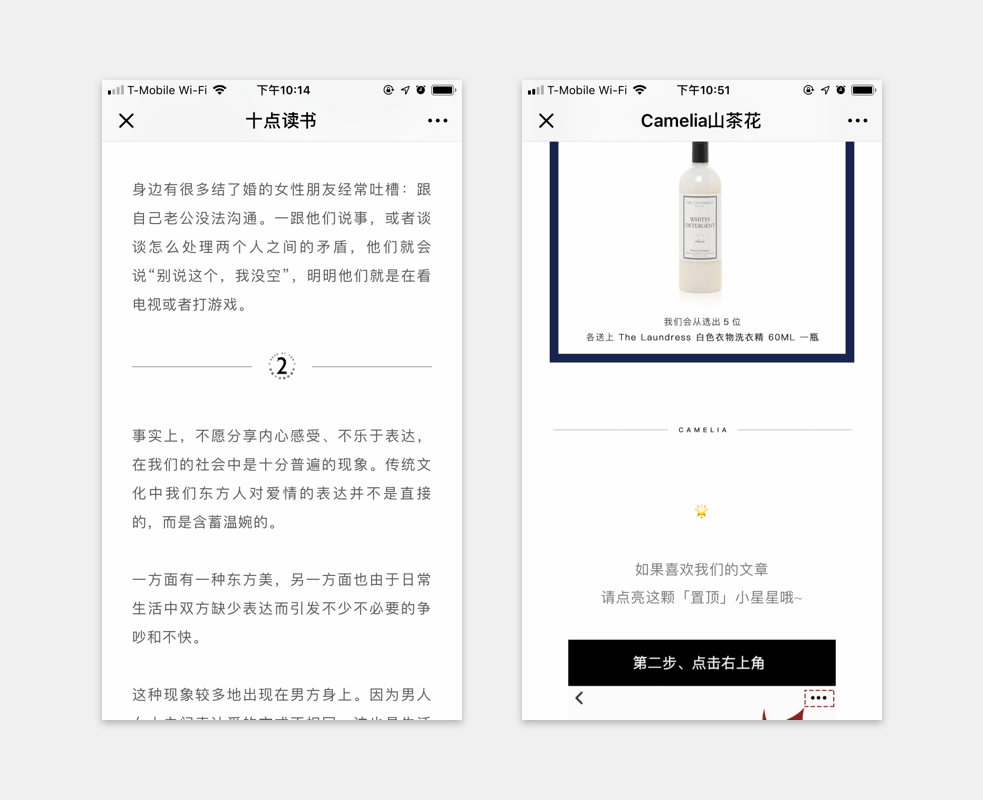
使用分割线和序号分割小节
如果使用序号就更好了，一来可以让小节之间的区分更加明显，二来可以起到类似页码的作用。比如上面十点读书公众号的例子，就采用了「序号+分割线」分小节的手法。
方法二：强调小节标题
如果文章中的小节有明确的标题，通过强调小节标题来分割层级可能更适合你。强调小节，标题的说法有很多，只要不把标题按照正文一样的方式写在那里就可以了。通常情况下可以使用居中、加粗、变色等手法强调小节标题。
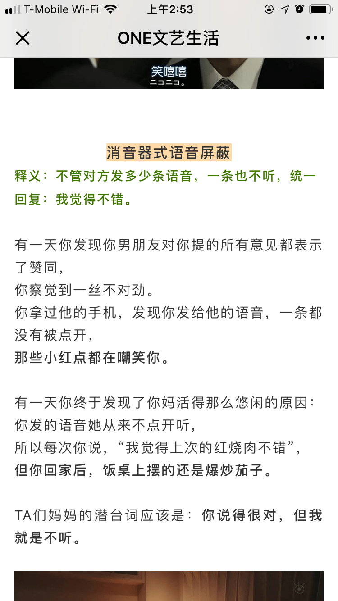
强调小节标题的方式
比如 ONE艺生活 公众号在文章中就给小节标题进行了加粗和居中，并且添加了背景色，这样一来层级就非常清晰了。
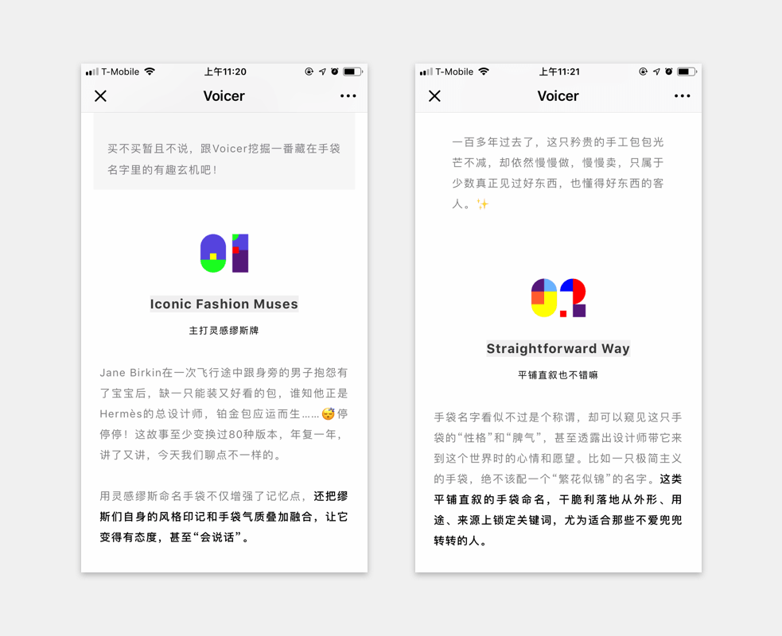
将品牌视觉融入到小节标题中
公众号 voicer 的这篇文章甚至把小节标题加上序号做成了很有设计感的图片。（如果你也想这样做，请确保你的设计质量，而且要符合你的品牌调性。）
方法三：在每个小节开始处插入图片
还有更加直接的，就是在每个小节开头的地方添加一个图片。这个图片类似于题图，但是它是属于该小节的题图，要注意图片所展现的内容，一定要符合该小节所传达的内容。如果，图片的内容与小结内容无关甚至冲突，反而会减慢读者的阅读速度，或误导读者。
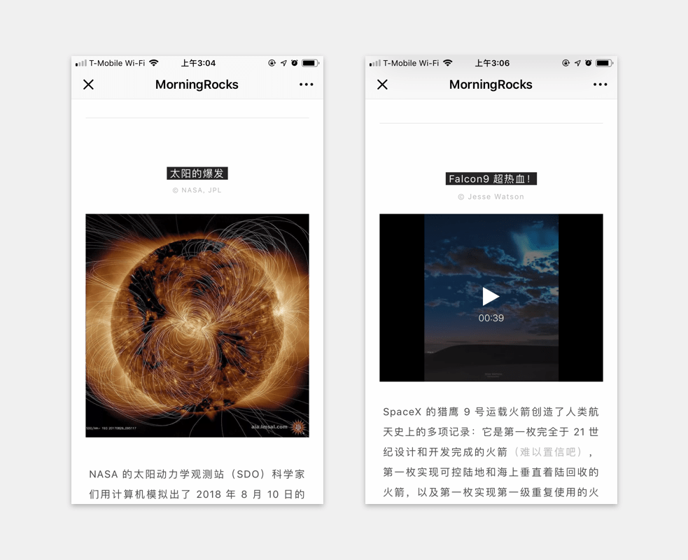
在每小节开头加入图片
MorningRocks 公众号的这篇文章同时使用了分割线、强调小节标题和插入图片三个分节方式，层级清晰而且读者知道自己在读什么。
通过在小节之间插入分割线或序号、强调小节标题以及在小节开始处插入图片三个方式就可以构造清晰的层级设计了。下面一步，是创造「减压的排版」。
二、减压的排版
宽松的排版可以给读者提供舒适的阅读环境，减小读者的阅读压力。就好像穿高跟鞋和运动鞋走同样的路，穿运动鞋可以让你走更长的路，舒适的体验能让读者花费更长时间阅读你的文章。
加之现代人工作和学习压力更大，看一个「可看可不看」的公众号，读者很有可能随时离开，而设计在其中的作用就是不让读者因排版设计而离开，甚至通过排版设计让读者阅读更长时间，这就需要我们创造一个「减压的排版」。以下五个办法，可以给微信文章创造一个减压的排版：
方法一：宽松的页边距和字距
我们在第六章讲到过：在页面上留白可以给读者创造视觉休息区，在微信上排版也是一样。留白第一步就是增加页边距，对于纵向可以无限滚动的手机屏幕来说，只有屏幕左右两边的留白可以称之为页边距。让我们来看一下微博和知乎这两个应用的页边距设定情况：
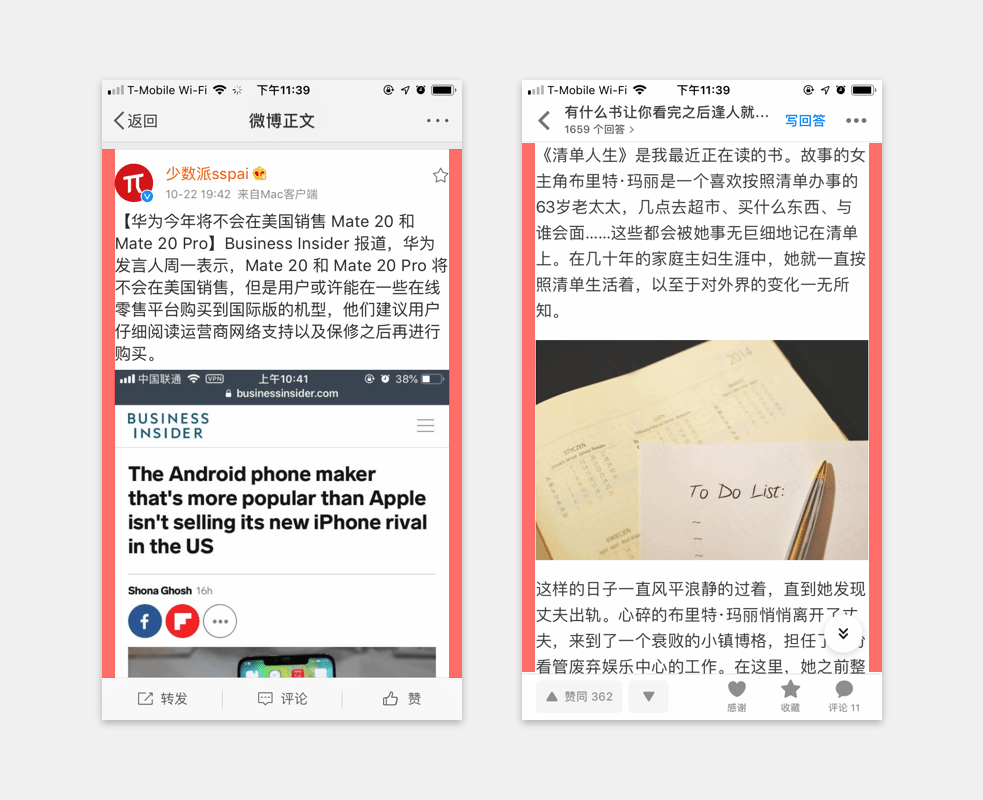
微博与知乎的页边距
这两个应用在页边距的设置上，只留出了非常窄的页边距宽度，行首和行尾都离边缘非常近。让我们挑一个微信公众号对比一下：
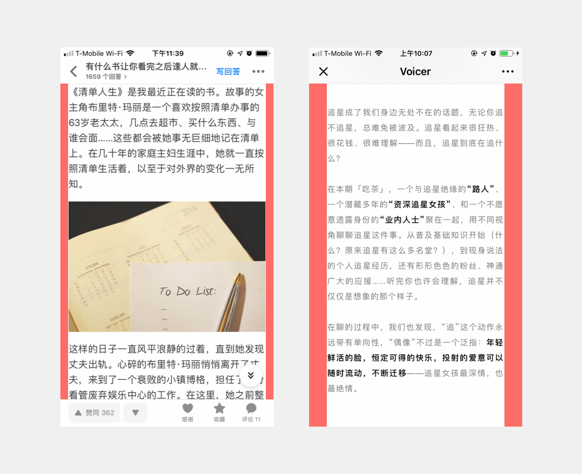
页边距对比：知乎和微信文章
是不是感觉阅读体验舒适了一些？这是因为公众号 毕导 的这篇文章拥有更宽的页边距，行首和行尾不再顶到屏幕的边缘，而是被一个宽大的页边距包裹了起来，视觉上有了休息的空间。在微信公众平台的编辑器中你可以使用「两端缩进」设置增加页边距，我推荐的两端缩进设置在 8 或 16 会比较舒适。
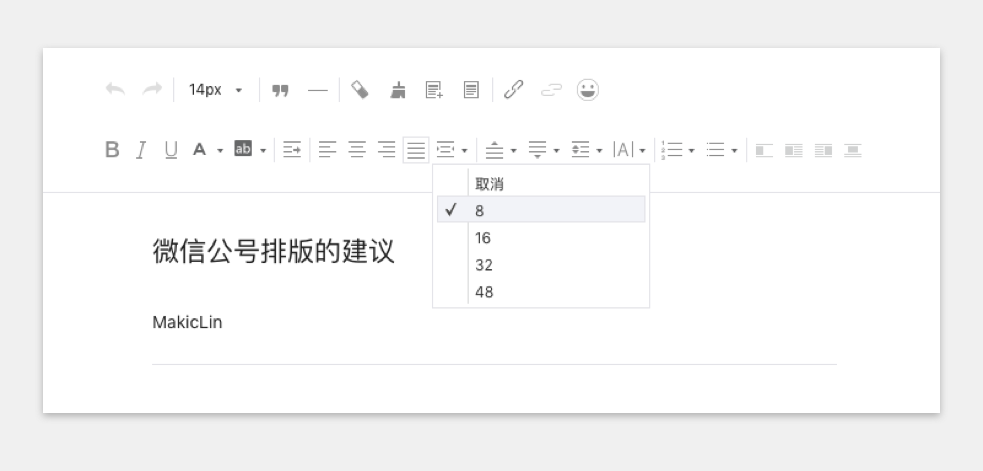
通过两端缩进来加大页边距
当然，这篇公众号文章中还增大了字距（字与字的间距），相比较紧的字距，大字距可以把字和字分得很开，减少了眼睛断字的工作量。使用微信公众号后台编辑器，我建议设置 0.5 的字间距，效果明显。
方法二：恰当的字号
字号，同样是利用横向空间。要知道，长长的手机屏幕上，字号不仅决定了读者是否能够清晰地阅读，还决定了每行包含多少文字。字号越大，包含的文字数量就越少；反之字号越小，包含的文字数量就越多。
对于印刷品而言，理想的每行字数在 45 个左右。对于公文格式，一般每行有 28 个字。而考虑到手机屏幕较窄，加上之前提到的大页边距+宽松字距 的排版手法，微信文章每行理想字数锁定在 20 个左右。相应所得的字号是：
- 正文字号：14–15pt
- 注释字号：12–14pt
- 标题字号：16–18pt
方法三：开启两端对齐
看到这里你可能发现，上面所有的排版例子，都使用了两端对齐的方式。这是因为，如果不使用两端对其，文字的行尾会形成锯齿状的，参差不齐。
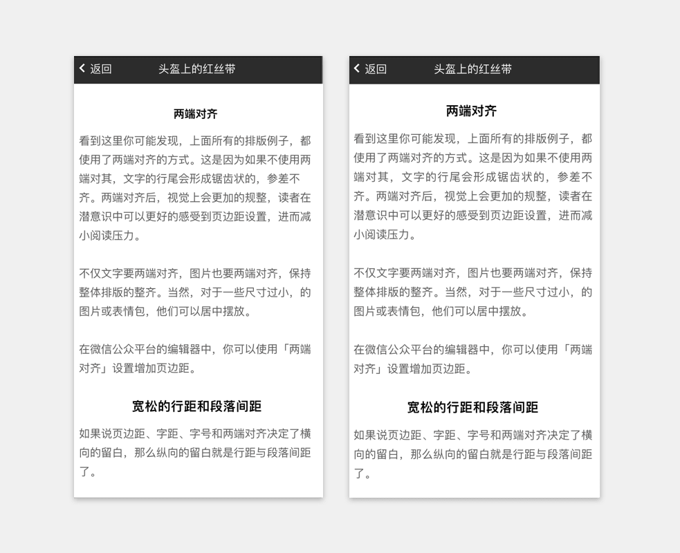
两端对齐开启与否
两端对齐后，视觉上会更加的规整，读者在潜意识中可以更好地感受到页边距设置，进而减小阅读压力。
不仅文字要两端对齐，图片也要两端对齐（也就是宽度统一），才能保持整体排版的整齐。当然，对于一些尺寸过小的图片或表情包，可以居中摆放。
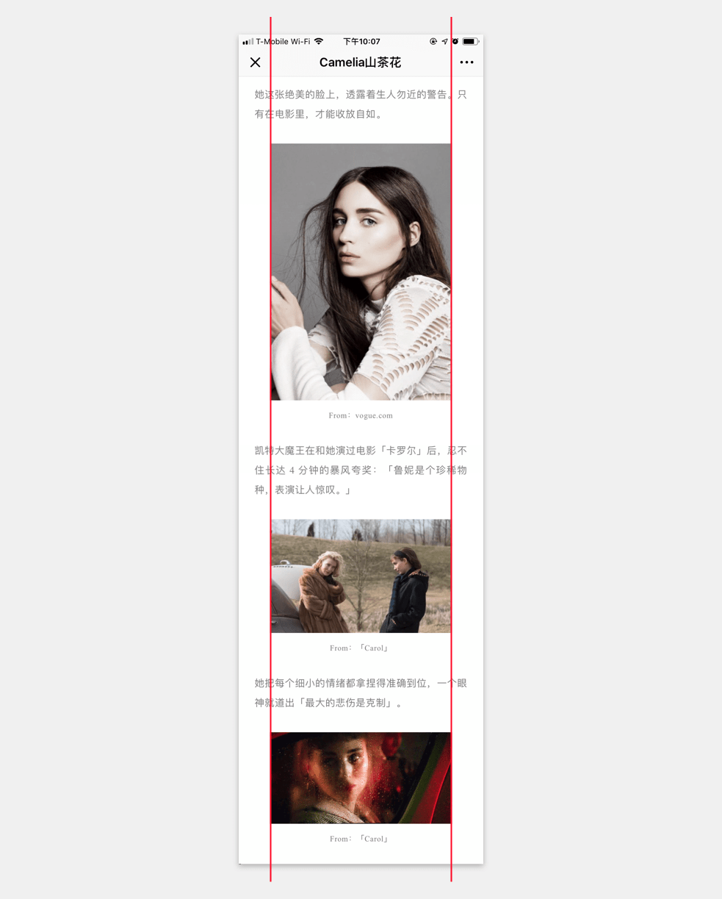
图片宽度对齐
方法四：宽松的行距和段落间距
如果说页边距、字距、字号和两端对齐决定了横向的留白，那么纵向的留白就是行距与段落间距了。
宽松的行距可以减少换行的视觉压力。这是因为我们从左到右，从上到下的阅读习惯，导致了每当读到行尾，眼睛要同时完成向下换行和回到行首两个动作。如果换错了行，还要进行重新定位。虽然同时完成换行和跳到行首这两个动作对于眼睛来说并不困难，但如果我们好好伺候我们的眼睛，通过增大行距让行与行之间的区分更加明显，是可以显著减轻阅读压力的。
让我们对比知乎排版和公众号 voicer 的排版：
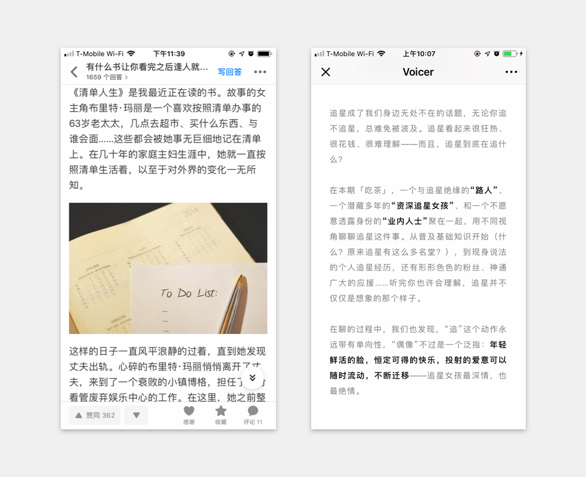
行距对比：知乎对比微信文章
可以看到，无论是横向留白（页边距、字距、字号和两端对齐）还是纵向留白，voicer 公众号文章中的留白都明显大于知乎，整体的视觉压力明显减少，也更加易于阅读。在微信排版中，我建议将行间距设定为 1.75 或 2。
既然行距增大了，段落之间的间距也应该相应增大，不然如何区分段落与行之间的区别呢。通常来讲，段落间距设定为行距的 34 倍即可明显的区分出行距段落间距的区别。不过在微信官方的公众平台编辑器中，提供的段前距和段后距并不能设定到这么大，你可能需要通过回车换行解决。
方法五：不绝对的颜色
在颜色的使用上，纯黑（Hex 值 #000000，相关知识点的可回顾第五章）作为文字颜色和纯白的背景色可能对比过于强烈，更容易造成视觉疲劳。
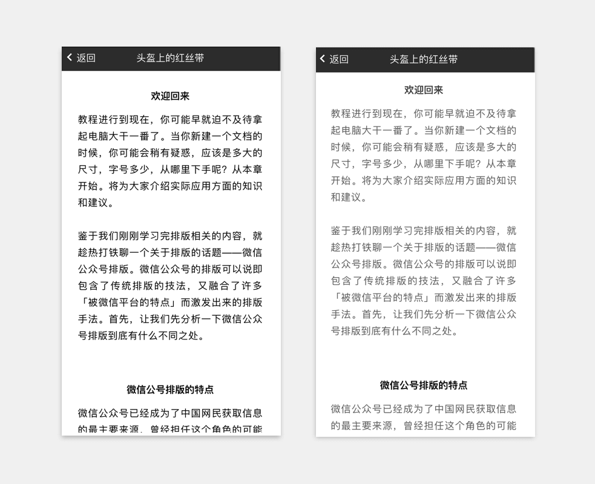
颜色对比：纯黑和深灰
所以我建议使用类似黑色但又不是纯黑的颜色，比如 #424242 这种深灰色作为文字的颜色，这样相对灰的颜色可以让读者认为「这是黑色」的同时减轻视觉疲劳，形成「减压的排版」。
结合以上关于「减压的排版」的几个点，我们可以尝试做出这样的排版。
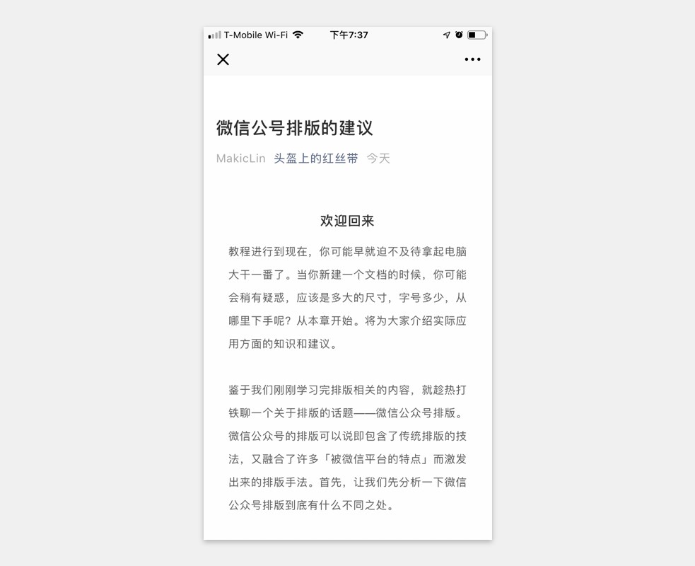
排版效果
上面这一段排版属性是这样构成的：
- 排版
- 16pt 两端缩进
- 开启两端对齐
- 小节标题：
- 段前距：20
- 段后距：10
- 字号：16pt
- 颜色：#000000（纯黑）
- 正文
- 行间距：1.75
- 字间距：0.5
- 字号：14pt
- 颜色：#424242（深灰色）
三、及时的反馈感
说到反馈感，之前我们提到了电子游戏的例子：游戏之所以好玩，是因为有非常及时的反馈。动一下手指，赛车就可以转弯，球就可以踢出去，枪就可以发射。你会同时收到视觉、听觉，甚至触觉多方面的及时反馈。这种操作即反馈的感觉让人对电子游戏欲罢不能。
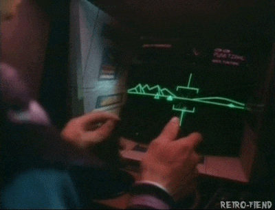
八十年代街机游戏
反观阅读这件事情，就没有那么明显的反馈。但反馈仍然存在，我们可以把阅读的体验比作横版闯关类游戏，比如魂斗罗和马里奥。阅读完一个段落，等于击杀小怪；阅读完一个小节则是击杀了一个 boss；段落的间距则是关卡与关卡之间要走的路，作为缓冲；动图、图片和视频是关卡中的升级要素，让闯关体验更有意思。
我们可以按照文章的层级构造，划分出反馈的种类：
- 以行为单位的反馈——我读完了一行
- 以段落为单位的反馈——读完了一个段落
- 以小节为单位的反馈——我读完了一个小节
在每个种类中，我们都可以给予读者一定的反馈。下面是具体的手法建议：
1. 更多的强调：创造以行为单位的反馈
阅读体验中最小的反馈循环是以句子为单位，即读完几句就会有一个反馈。这种被玩家完虐的小怪级反馈，虽然不痛不痒，但却能让阅读体验保持不无聊。要制造这种反馈，可以通过合理的强调文章中的重点来达到。比如这样：
未加强调版：
我认为，把每句话都当成段落的排版方法是微信环境所催生出来的特殊排版流派。我并不推荐你使用这种排版方式，因为不是所有文章的内容都适合把每句话都当成段落。
加强调版：
我认为，每句话都当成段落的排版方法是微信环境所催生出来的特殊流派。我并不推荐你使用这种排版方式，因为不是所有文章的内容都适合把每句话都当成段落。
你应该能感受到，这两个段落的阅读体验是不同的，有强调的段落不仅可以加快阅读速度，还能强化你对内容的理解。当然，不要为了创造反馈而强行强调内容，所强调内容必须是合理的有助于读者理解内容的。比如下面这个就是不正确的强调：
我认为，把每句话都当成段落的排版方法是微信环境所催生出来的特殊排版流派。我并不推荐你使用这种排版方式，因为不是所有文章的内容都适合把每句话都当成段落。
上面这个段落中的强调部分对理解内容并不是很有帮助，因为强调的东西是读者已经知道的，相对没有分量的东西。想要强调内容，可以通过简单的加粗来实现，除了加粗还可以变色（比如红色，因为红色是最容易引起 人们注意的颜色；）或加背景色，也可以强调某个内容。比如新世相公众号的这篇文章中，就用加粗和标红两种方式进行了强调。
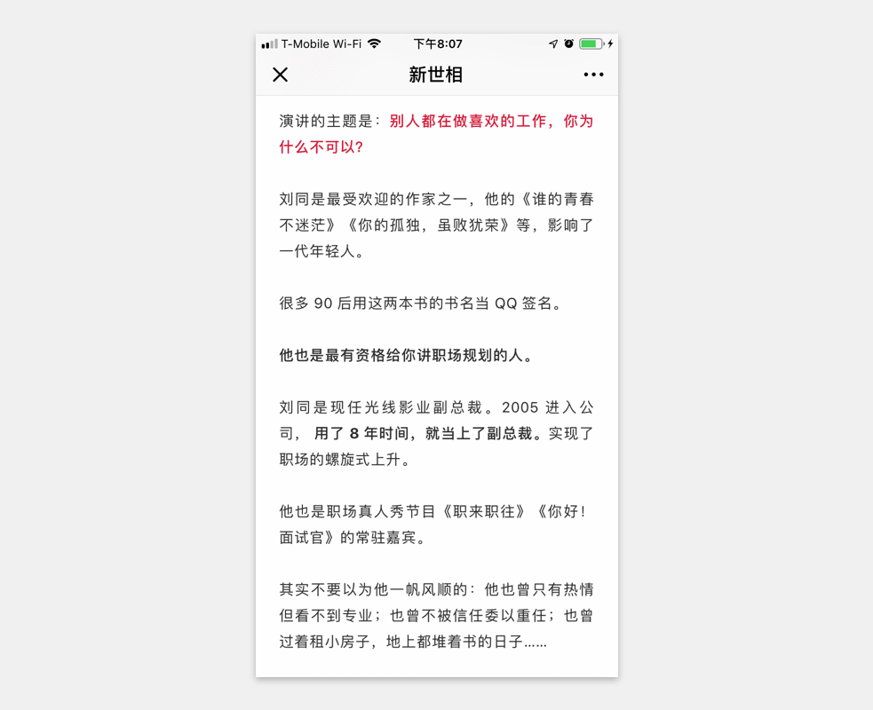
以强调内容作为反馈
文章中这种不经意间出现的强调内容，就像游戏中的被玩家撵杀的小怪，可以给读者不断的小反馈，让读者有兴趣读下去。
2. 限制段落长度：加强以段落为单位的反馈
想要制造「我读完了一段」的反馈，就要求我们控制好段落的长度。一般来讲，一个段落的最长不宜超过手机屏幕一屏。长度超过一屏意味着需要滚动才能浏览完这个段落，会给读者造成「这个段落很长」的感觉。
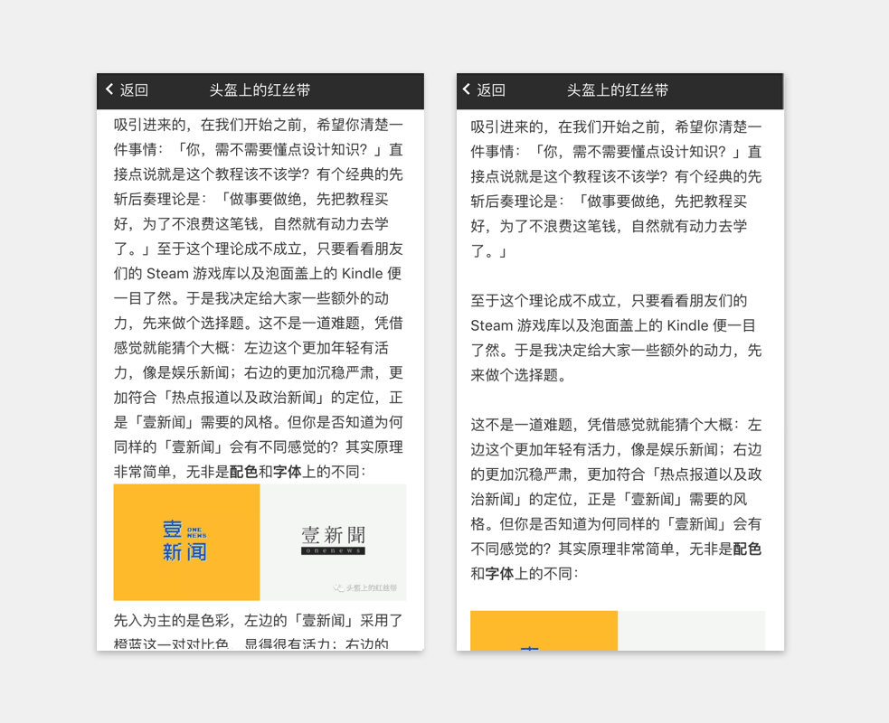
限制段落长度
左边的段落长度明显更长，视觉上没有右边的文章轻松。观察你经常读的公众号，你很难找到超过一屏的段落。
至于一个段落的最短长度，可以是一句话。在微信平台中，不乏每一句话都是段落的例子。比如这篇微信公众号文章，就是用了居中型排版：
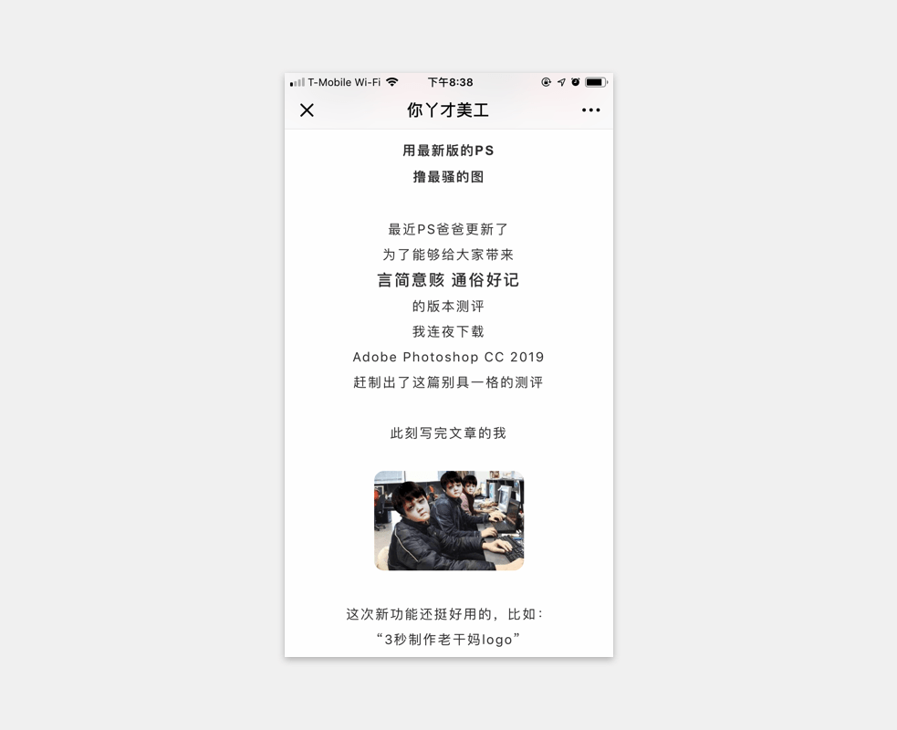
这是微信环境所催生出来的特殊排版流派，我们在后文会展开来讲。
3. 更隆重的小节区分：加强以小节为单位的反馈
我们之前已经讲过，小节标题可以让文章的层级更加清晰，不让读者迷失在你的文章中。与此同时，小节的结束和开始也是一个非常重要的反馈，提醒读者你已经读完了这篇文章的一个部分。就好像游戏中打赢 boss 意味着你完成了整个游戏的一个阶段。
让小节区分更隆重的手法仍然和之前相同：序号、加粗、变色，甚至做成图片。比如差评公众号的新闻文章：
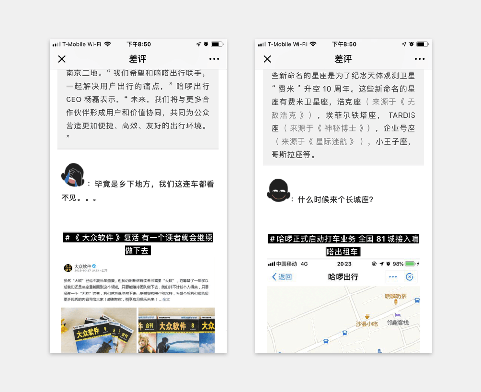
以一句话评论作为小节区分
以每条新闻为小节，每个小节的结束由一句评论结尾，这条评论不仅让文章结构更加清晰，同时也会给用户一种「得到奖励」的感觉。
4. 经常插入图片和表情包
图片和表情包是字里行间的润滑剂，是游戏中恢复生命值的小血瓶。在这个阅读耐心不断丧失的年代，一两屏的纯文字已经会让人觉得枯燥乏味，图片和表情包就在此，派上了用场。
下面的对比图出自同一篇文章，让我们来对比一下有图片和无图片的效果：
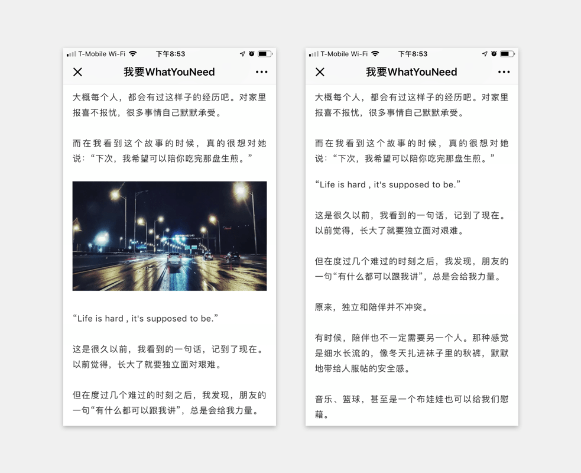
有无图片的阅读体验对比
要注意的是，图片或表情包内容要和文章的内容或感情相关。比如这样：
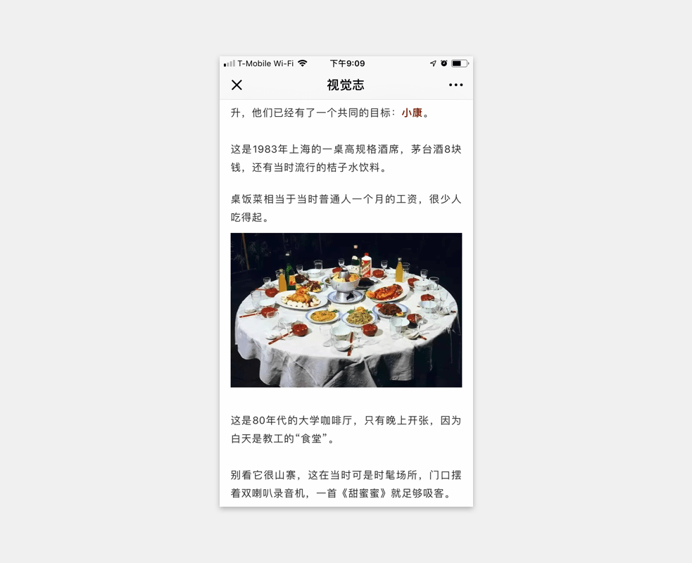
图片和文章中描述的「高规格酒席」相符
或者这样：
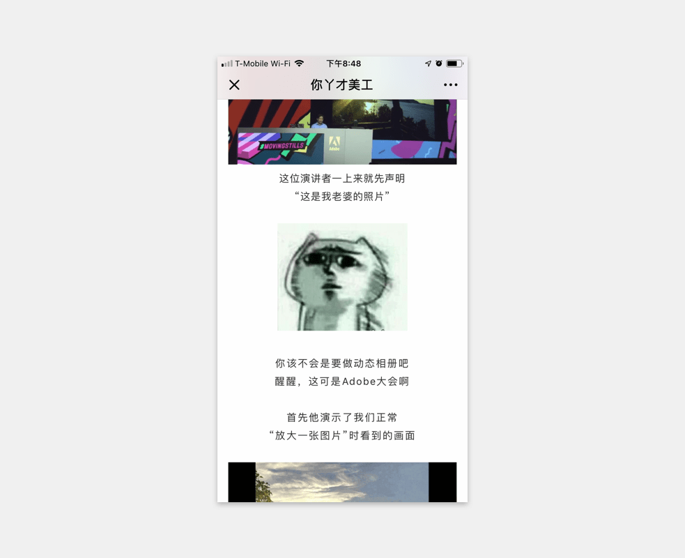
表情包的情绪与作者情绪相符
与内容无关的图片反而会影响读者对内容的理解，不仅是图片，表情包也是一样。如果你想渲染高端高冷的调性，通俗有趣的表情包就会格格不入。另外，作为文章的润滑剂，表情包和图片也不能滥用。如果一篇文章中润滑剂的比重超过了实际内容，会给读者一种「这文章很水，浪费时间」的感觉，即使你的内容并不水。所以面对上述情况，还不如不加表情。现在微信上不乏表情包泛滥的文章，恰到好处的使用表情包，或是干脆不使用表情包（转而使用更美观，更有审美的配图），将会是你的公众号不同于其他公众号的机会。
另外，加图时需要注意到图片的比例。长长的图片会和长长的段落一样，让读者看不到首尾。所以比较合适的图片比例是 16：9，既不过长，也是非常常见且通用的图片比例。
同时，提示大家在使用互联网图片时注意图片版权，你可以在搜索引擎中选择「可商用可修改」筛选符合版权要求的图片；也可以去诸如 Unsplash、Pexels、Pixabay 这样的免费图库中获取没有使用限制的图片；或者去 ShutterStock 这类专业的图片授权网站中购买授权。
在手机上预览最终效果
最后一定要记得，虽然我们需要使用电脑排版，但最终效果主要显示在手机上。在排版的过程中，以及排版完成的时候，一定要使用预览功能，进行检查。
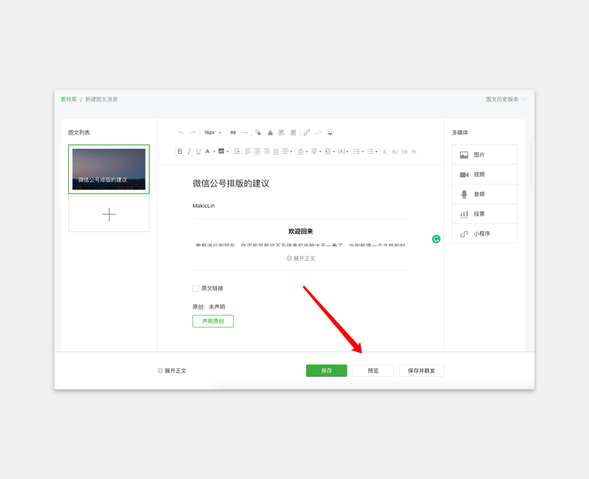
微信公众平台的预览功能
微信公众平台后发送到手机进行预览的功能（点击「预览」按钮，然后点击「发送到手机预览」），如果可以，一定要在真机上进行一遍预览，这样才能看到真正的排版效果。
以上，便是我对于微信排版手法的建议，我们总结一下，不知道大家还记不记得幼儿园和小学的时光。
小结：像幼儿园老师一样做微信公众号排版
幼儿园教师，甚至是小学一、二年级的老师，有一个非常重要的教学手法——使用低龄化的语言进行沟通。
使用低龄化的语言进行沟通
低龄化语言的特点，是语言简单，声调夸张，甚至还有表情配合。这种低龄化的语言形式可以有效帮助儿童理解老师所说的内容。微信文章排版也是一样，我们上述的排版形式，也是为了帮助读者理解内容。那么请大家回过头来看一看，我们的形式到底是什么样的：
- 宽松的页边距，字距
- 高高的行距
- 两端对齐
- 强调的小节标题
- 时常提示读到了哪里
- 时不时的小反馈
- 每小节的大反馈
你会发现，我们所做的这种微信排版的形式，其实就是一种「视觉版低龄化语言」。运用多种手法，帮助读者理解内容，让读者停留在在你的文章上，获取他们的注意力。
带着这样的思路进行微信文章的排版，才是微信文章排版的精髓之处，也是本章教程的目的。带着这样的思路进行微信文章排版，你会自己研究出本章教程之外的合理手法，比如下面这就是一个好例子：
居中型排版
如果把「像幼儿园老师一样做微信公众号排版」发挥到极致会是什么样子呢？让我们来一起看一下：微信特色派的路数。注意，这些特色路数，仅适合微信文章，不适合任何其他情况：

居中型排版
这种「居中对齐，从上到下」的排版，对于传统的排版是特色流派，但在微信程度上已经某种程度上接近主流。
有趣的是，在启蒙时代（17 世纪到 18 世纪），也就是平面设计的早期，居中对齐从上到下的排版方式曾在行业中流行过。
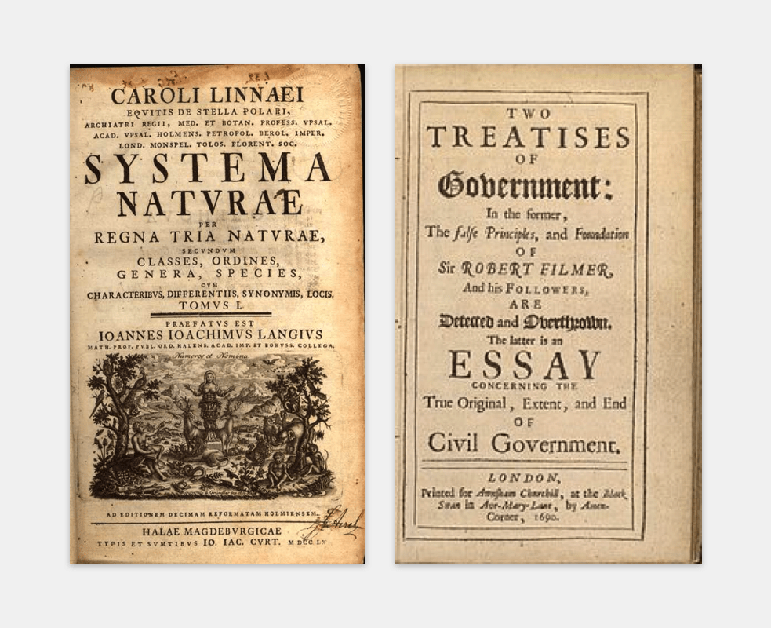
左：An Essay Concerning Human Understanding，1690；右：Systema Naturae, 1758
你一定觉得这样的排版相当混乱没有美感。很大原因是因为句子长度不统一且居中对齐，让左右两边形成了连续的锯齿。在第六章中我们也说过「可以将版面上的元素想象成一个一个的矩形」，没人会喜欢页面上无数个参差不齐的矩形吧。不过到了微信公众号这个平台，事情又有所转变。这种「居中对齐，从上到下」的方式又回到了人们的视野中，一定有它归来的原因。
「居中对齐，从上到下」的排版好处是：读者感觉自己的阅读速度非常快。因为每读完几个字就能收到「我读完了一行」的反馈，读完几行之后又有了「我读完了一屏」的反馈，这种阅读反馈的节奏感非常好。
当然，不要急着使用居中型排版。相比起通用的微信文章排版技巧，这种排版方式对内容有特定的要求。我们来回看以下两个例子：
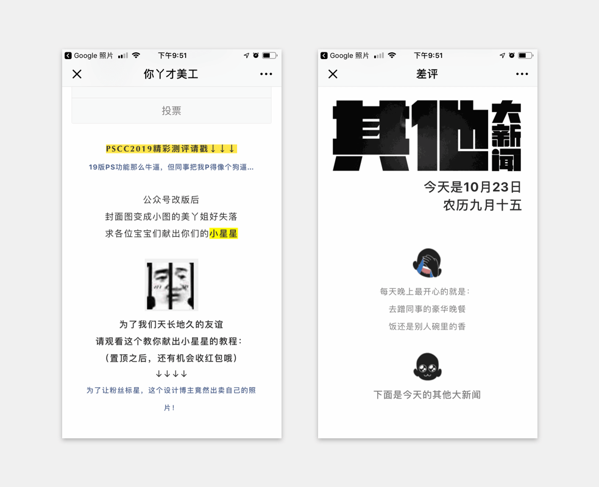
「居中对齐，从上到下」对于内容的要求
你会发现他们的文章本身就由短句组成，这些句子自带节奏感，而且有很强的对话感，好像一个人正在跟你说话。所以在使用 居中对齐从上到下 的排版方式的时候，要从写作出发，把排版和文风结合起来。
「居中对齐，从上到下」也不全是好处。它的优点也是它的弊端：这种排版疯狂消耗纵向的屏幕空间，本身一屏的内容需要 23 屏才能装下，导致即便频繁滑动屏幕，右边的滚动条却不走多少，会让读者感到文章长到无穷无尽，丧失阅读的耐心。这是为什么上面的例子「你丫才美工」公众号的文章，仅在开头和结尾使用这样的排版，而正文内容则是采用长图这种信息密度更高的形式呈现。
分析了半天居中对齐从上到下，我想说的是，其实这种非常特殊的排版方式，甚至可以说是在专业判断中不受待见的排版方式。在微信排版的领域却是非常合理的，它是一种「像幼儿园老师一样做微信排版」的终极体现。不信让我们来看一下，小学一年级语文课本下册中的课文原文：
《看电视》
每天，我们全家人都看电视，我家看电视，真有些奇妙——爸爸明明是个足球迷，却把一场精彩的球赛关掉。不知为啥换成了京剧，咿咿呀呀的，唱个没完没了。只有奶奶听得入迷，我和爸爸都在打盹睡觉。奶奶啥时换了频道？球员们正在场上飞跑。“好球。好球，快射门！”我和爸爸了乐得直叫。奶奶不看电视只看我们，和我们一起拍手欢笑。妈妈从书房走了出来，她在修改最近写的文稿。看着妈妈一脸的疲劳我们都提议不再看球赛，让妈妈听听音乐，看看舞蹈。每天，我们全家人都看电视，我家看电视，可真有些奇妙！每个人心里都装着一个秘密，到底是啥？不说你也知道。
这篇名为看电视的课文，全篇使用短句组成，而且疯狂换行，这难道不就是「居中对齐，从上到下」的最好素材吗？
所以，看完这篇文章后你不仅应该知道，正文字号大约在 14pt 左右，段落应该两端对齐，图片最好是 16:9 的横向图片。你更应该知道，这些形式的背后，是「像幼儿园老师一样做微信排版」这个理念所支撑的。而这个理念的形成，又和微信排版的特点密切相关，也就是我们在开头所说的三个点：纵向滚动、主要用手机屏幕呈现和阅读碎片化。
按照同样的理念和手法，你还可以向外迈出步伐，为自己的 Kindle，Instapaper 等软件中的文章阅读进行设置，给自己打造一个舒适的阅读体验。
最后，要说一个值得思考的问题。一个有态度媒体，并不需要一味服务读者。而是引领读者跟随自己的思想。这一点也可以在排版上面也可以体现出来。独到的品位和优质的内容就算不跟随大众使用大量表情包，不强求感情激烈的语言风格，不使用居中型排版也完全没有问题。符合大众审美是正确的，引领大众的审美是伟大的。
推荐阅读
本章所介绍的微信公众号排版与移动应用设计以及排版相关，在这里给大家推荐一篇启发性的文章和一本理念性很强的书籍：
《讨论：长文的数字排版与阅读》
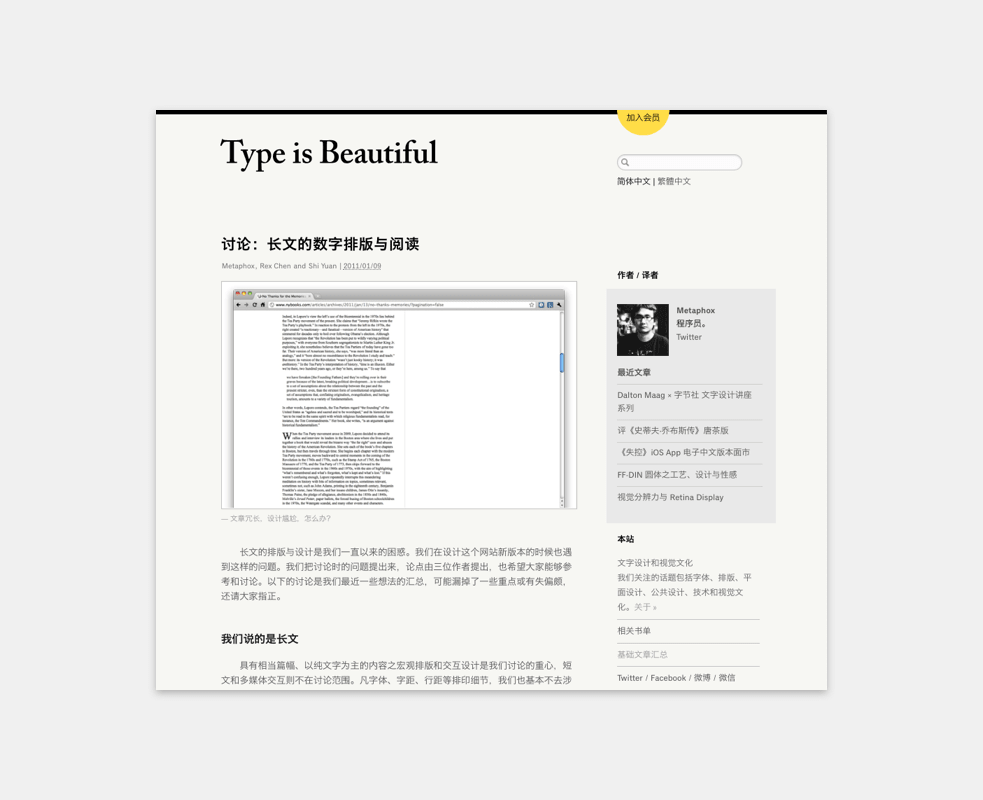
《讨论：长文的数字排版与阅读》
《讨论：长文的数字排版与阅读》是一篇来自 Type is Beautiful 的远古文章，于 2011 年发表。好的地方是，这篇文章更多是引起大家对于数字平台上长文排版的讨论，而不是下定论，大家可以自己想一想文章中和评论区中的问题，在七年之后的今天，答案会是什么样的。
《点石成金》
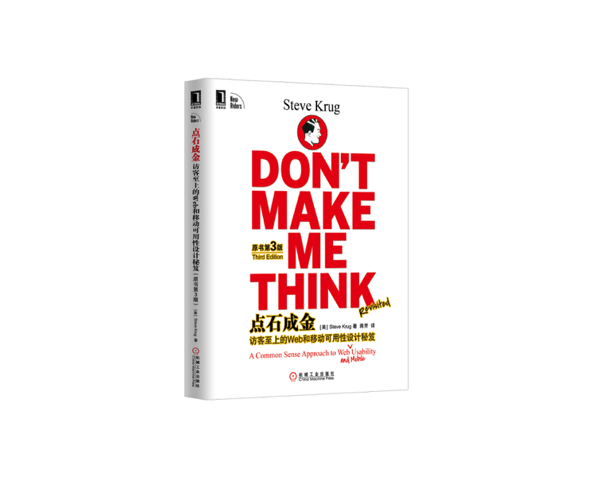
《点石成金》
相比起中文名，这本书的英文名《Don’t Make Think》可能更加耳熟能详一些。这本书最早于 2000 年出版，内容网页和交互设计领域的几个基础理念。《点石成金》围绕着「不要让用户思考」这个核心理念，展开讲解了交互设计的一些理念和手法，是互联网和软件交互相关知识必备的入门书籍之一。
虽然这本书中并不包含严格意义上的平面设计知识，但书中很多手法和理念尤其是「不要让用户思考」的理念，对于很多设计领域都很适用，而且和我们「像幼儿园老师一样做微信公众号排版」不谋而合。
结语
以上就是本章的全部内容了，本章主要讲解了微信公众号排版的相关建议。我们首先分析了微信公众号排版的特点，得出了微信公众号排版需要解决的问题，随后对症下药讲解了具体的手法。最后，一定记得这一切的手法是有原因的，即「像幼儿园老师一样做微信公众号排版」。与此同时不要忘记，在调性与态度面前，也不必一味服务读者，有自己的坚持也是很好的。
在下面一章，我们将一起了解在微博，微信朋友圈中广泛传播的「长图」该怎么做。
上一期
精选评论（0） 我的评论